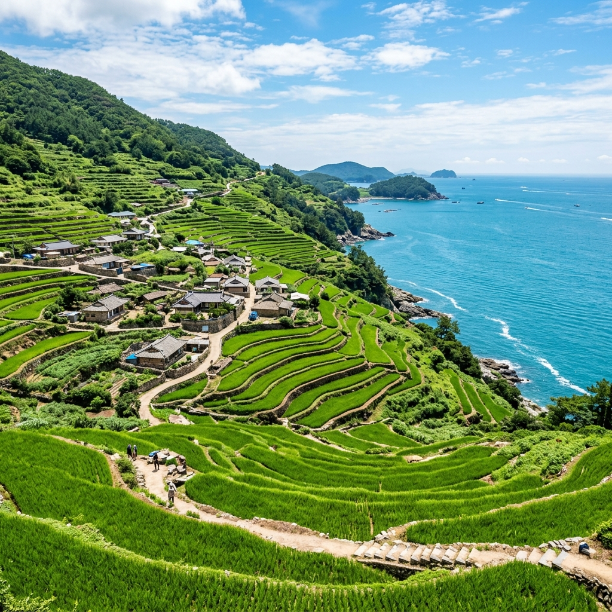
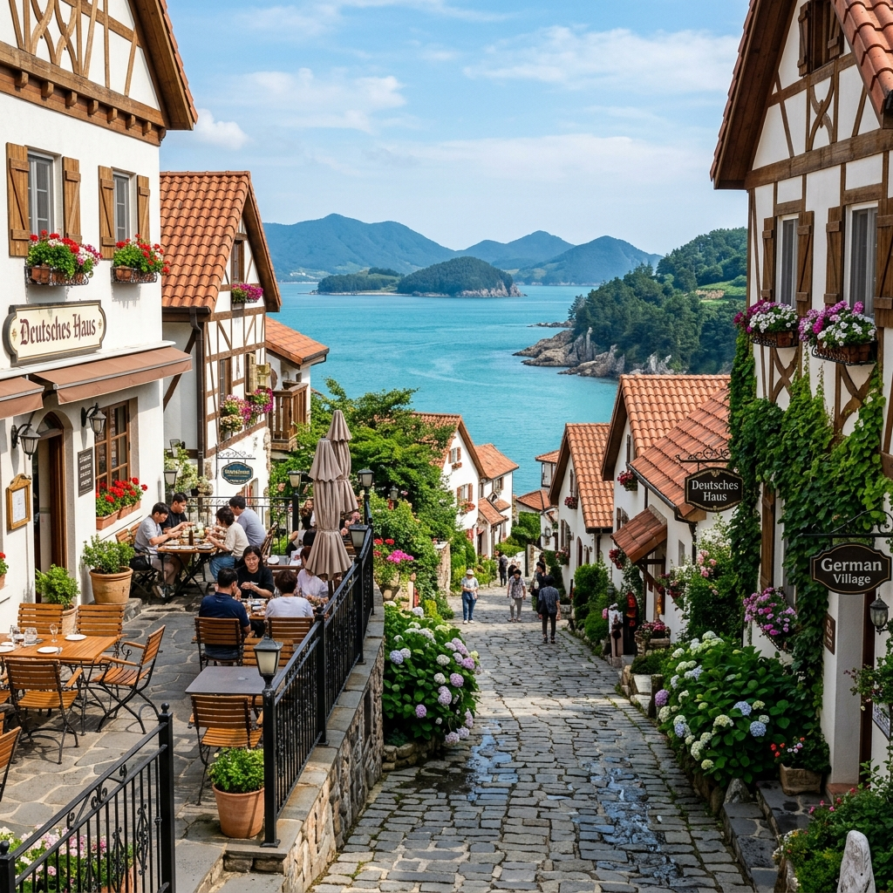
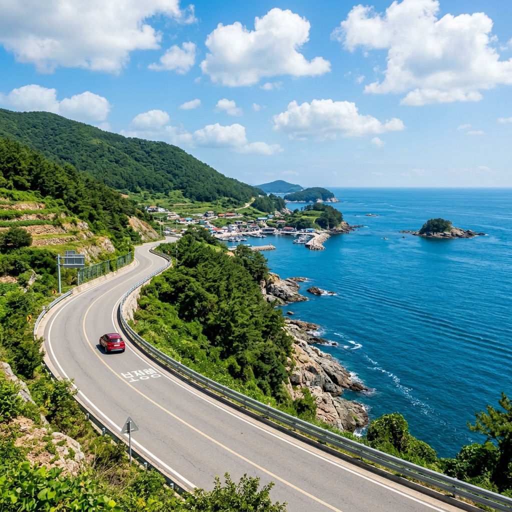

남해 다랭이마을 계단식 논 해안 드라이브 코스, 독일마을 여름 맥주까지
✍️ 경험박스
처음 남해를 갔을 때 다랭이마을에서 본 풍경이 아직도 잊히지 않습니다. 논이 바다를 향해 층층이 쌓여 내려가는 모습은 어느 그림에서도 보지 못한 풍경이었습니다. 거기다 독일마을에서 먹은 시원한 생맥주 한 잔이 완벽한 하루를 마무리해줬습니다. 남해는 갈 때마다 다른 표정을 보여주는 섬입니다.
01. 가천 다랭이마을이란 어떤 곳인가
남해군 남면 홍현리에 위치한
가천 다랭이마을은 급경사 산비탈에 108개의 계단식 논이 조성된 독특한 농촌 풍경으로 유명합니다. 논이 좁아 기계 경작이 불가능해 지금도 주민들이 손으로 농사를 짓는 전통 방식이 이어지고 있습니다. 이런 독특한 문화 경관 덕분에 명승지로 지정됐습니다.
마을 주변을 둘러싸는 해안 풍경도 빼놓을 수 없습니다. 가파른 산 아래로 논이 이어지고, 그 끝에 바다가 펼쳐지는 풍경은 한국에서 보기 드문 절경입니다. 일출과 일몰 때 특히 아름답지만, 맑은 여름 오전에도 눈부신 경치를 보여줍니다.
다랭이마을은 관광지화돼 있지만 실제 주민들이 거주하며 농사를 짓는 생활 공간이기도 합니다. 논으로 내려가거나 농작물을 건드리는 행위는 삼가야 합니다.

층층이 내려가는 다랭이마을 계단식 논과 남해 바다 / AI 제작 이미지
02. 다랭이마을 가는 법과 주차 안내
남해는 섬이지만 남해대교와 창선·삼천포대교로 육지와 연결돼 있어 자동차로 편하게 이동할 수 있습니다. 서울·부산·광주 등 주요 도시에서 남해까지는 약 3~4시간 소요됩니다.
다랭이마을 전용 주차장이 있으며, 마을 입구에서 걸어서 논 전망 포인트까지 이동합니다. 주차장에서 마을 중심부까지는 약 5~10분 도보이며, 경사가 있으므로 편안한 신발을 신는 것이 좋습니다. 성수기(7~8월)에는 주말 오전부터 주차장이 꽉 찰 수 있으므로 오전 일찍 방문하거나 평일을 선택하는 것이 좋습니다.
03. 다랭이 해안도로 드라이브
다랭이마을 관람 후 인근 해안도로를 따라 드라이브하는 것이 남해 여행의 백미입니다. 남면에서 상주은모래비치 방향으로 이어지는 해안도로는 절벽과 바다가 번갈아 펼쳐지는 경관이 인상적입니다.
창선·삼천포대교 방면 드라이브 코스도 추천합니다. 바다 위를 가로지르는 연속 교량이 이어지는 구간으로, 차창 밖으로 다도해 섬들이 시원하게 펼쳐집니다.
여름이라면 상주은모래비치 또는 송정솔바람해변을 코스에 넣는 것도 좋습니다. 두 해변 모두 맑고 잔잔한 남해 바다를 품은 아름다운 해수욕장입니다.

남해 해안도로 드라이브 풍경 / AI 제작 이미지
04. 독일마을 — 맥주와 소시지의 유럽 감성
남해 독일마을은 1960~70년대 독일에서 일하고 귀국한 광부·간호사 출신 교포들이 모여 조성한 마을입니다. 붉은 지붕 독일식 주택들이 줄지어 서 있는 풍경이 독특합니다. 현재는 카페·레스토랑·기념품점이 들어서 관광지로 자리 잡았습니다.
독일마을의 가장 인기 있는 즐길거리는 독일식 레스토랑에서 맥주와 소시지를 즐기는 것입니다. 여름 저녁 테라스에 앉아 바다를 바라보며 시원한 독일 맥주를 마시는 경험은 특별합니다. 다만 유명세에 비해 음식 수준이 가게마다 들쭉날쭉하다는 후기가 있으니 방문 전 리뷰를 참고하세요.
독일마을 바로 아래
물건방조어부림(해안 방풍림)도 볼거리입니다. 300년 넘은 나무들이 바닷가를 따라 울창하게 늘어선 모습이 인상적이며, 뜨거운 여름 한낮에 그늘 산책을 즐기기에 좋습니다.
05. 남해 먹거리 — 멸치·바지락회무침
남해는 멸치로 유명한 고장입니다. 남해 죽방멸치는 전통 방식으로 잡아 맛과 향이 뛰어나다고 알려져 있습니다. 시장에서 멸치와 멸치 관련 식재료를 구입하는 것도 남해 여행의 재미입니다. 멸치쌈밥, 멸치회무침 등 멸치를 활용한 향토 음식을 파는 식당들이 많습니다.
바지락칼국수, 전복죽도 남해에서 맛보기 좋은 메뉴입니다. 다랭이마을 주변과 독일마을 입구에 식당들이 모여 있어 식사 선택지가 다양합니다.

남해 독일마을 붉은 지붕과 바다 풍경 / AI 제작 이미지
06. 남해 당일 코스 vs 1박 2일 코스
남해는 일정에 따라 당일 또는 1박 2일로 여행할 수 있습니다.
당일 코스 (부산·진주 출발 기준): 다랭이마을 → 독일마을 → 물건방조어부림 → 상주은모래비치 → 귀가. 오전 9시에 출발하면 여유롭게 소화할 수 있습니다.
1박 2일 코스: 1일차 - 남면 다랭이마을·해안도로·독일마을 / 2일차 - 창선·삼천포대교 드라이브, 보리암(금산), 노도 문학관 방문. 독일마을 내 민박·펜션에서 숙박하면 마을 분위기를 더 깊이 즐길 수 있습니다.
📝 작성자 메모
다랭이마을은 SNS 사진으로 보는 것보다 실제로 가면 더 작게 느껴질 수 있습니다. 마을 자체 규모가 크지 않아 관람 시간은 30~40분이면 충분합니다. 마을 위쪽에 있는 전망 포인트가 논과 바다를 한눈에 담을 수 있는 최고의 사진 스팟이니 꼭 올라가 보세요. 독일마을 식당들은 주말 점심에 웨이팅이 있을 수 있으니 늦은 점심을 공략하는 게 유리합니다.
#남해다랭이마을
#가천다랭이
#남해독일마을
#남해여행
#남해해안드라이브
#경남여행
#계단식논
#남해멸치
#물건방조어부림
#여름국내여행